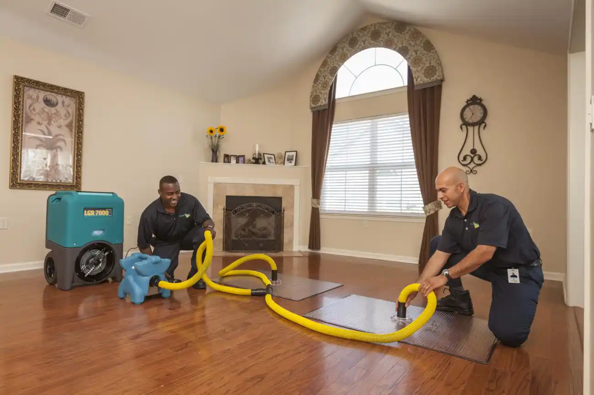
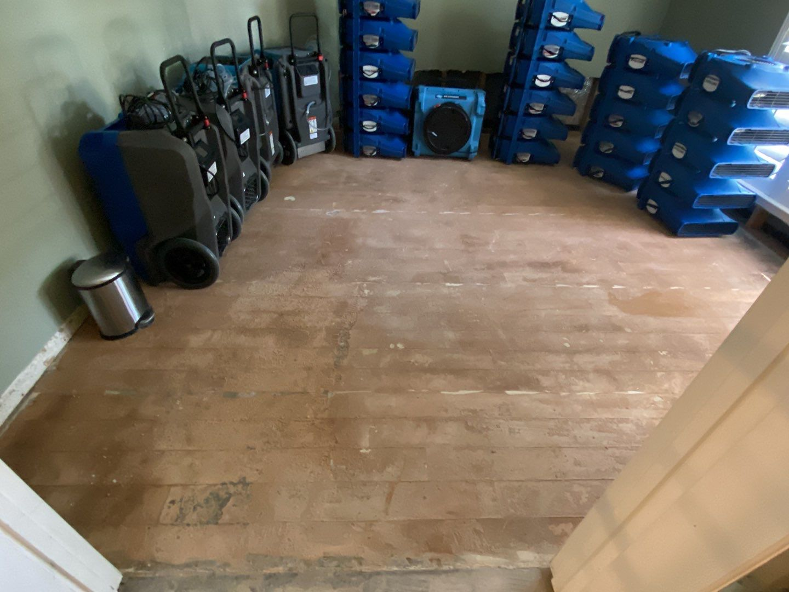

GALLERY
Our Recent Projects




Intensa Dry provides swift and effective fire damage restoration services in Frisco, TX, ensuring your property is restored to its original condition as quickly as possible. Trust us for reliable solutions and peace of mind during your recovery.
For those dealing with fire damage in Frisco, TX, Intensa Dry offers swift and trustworthy restoration services. Our dedicated team quickly assesses and repairs fire damage, working to restore your property to its pre-damage condition. We manage everything from debris removal to complete repairs and restoration, ensuring efficient and thorough solutions. Trust Intensa Dry for prompt, professional service and peace of mind during your restoration process.
When fire damage strikes, immediate action is crucial. At Intensa Dry, we provide 24/7 emergency fire damage restoration services in Frisco, TX. Our team is always ready to respond swiftly, offering rapid assessment and intervention to minimize damage and begin the restoration process. From emergency board ups and debris removal to comprehensive cleaning and repair, we handle all aspects of fire damage restoration. Trust us for prompt, expert service in Frisco, ensuring your property is efficiently restored and you regain peace of mind as quickly as possible.
Intensa Dry’s comprehensive approach to fire damage restoration in Frisco, TX, ensures that your property is returned to its pre-damage condition. Here’s how we handle the fire damage restoration process in Frisco:
Emergency Response and Assessment: We begin with an immediate response to secure your property and assess the extent of the fire damage. This includes boarding up windows, covering damaged areas, and evaluating structural and contents damage in Frisco, TX.
Water Extraction and Drying: If the fire was extinguished with water, we promptly remove any residual water and start the drying process. Our advanced equipment ensures that all moisture is extracted to prevent mold growth and additional damage to your Frisco property.
Debris Removal and Cleanup: We thoroughly remove all debris, including charred materials and damaged belongings, preparing your property for further restoration. This step ensures a clean and safe environment for comprehensive fire damage restoration in Frisco.
Smoke and Soot Removal: Our team uses specialized techniques to clean and deodorize areas affected by smoke and soot. We address residue on walls, ceilings, and other surfaces to restore air quality and eliminate lingering odors in your Frisco, TX property.
Structural Repairs and Reconstruction: We repair or rebuild structural damage, including walls, floors, and ceilings. Our skilled craftsmen ensure all repairs are conducted to meet safety and quality standards, providing effective fire damage repair services in Frisco.
Final Cleaning and Restoration: After completing repairs, we perform a final cleaning of your property, removing all fire-related residues to fully restore your home or business in Frisco to its original state.
Inspection and Customer Review: We conduct a thorough inspection to ensure every aspect of the fire damage restoration is complete and satisfactory. We also review the work with you to ensure your needs and expectations are met.
By following these steps, Intensa Dry delivers meticulous and efficient fire damage restoration services in Frisco, TX, helping you return to normalcy as quickly as possible.
Water Damage Cleanup and Mitigation
Reconstruction Services
Fire Damage Restoration
Intensa Dry offers prompt water damage cleanup and mitigation in Frisco, TX. Our services include rapid response, efficient moisture removal, comprehensive restoration, and proactive mold prevention.
READ MOREReconstruction services in Frisco, TX, involve restoring damaged structures, homes, or buildings to their original condition following disasters or accidents. This process is crucial for ensuring safety, functionality, and aesthetic appeal after incidents.
READ MOREOur fire damage restoration team excels at repairing and restoring properties affected by fire, smoke, and water damage, ensuring a thorough recovery process in Frisco, TX. We understand the devastating impact that fire can have on your home or business.
READ MOREExpert Team
Skilled professionals dedicated to providing top-quality service.
Customer-First Approach
Your satisfaction is our priority, guaranteed.
Unmatched Reliability
Count on us to be there when you need us, every time.
Comprehensive Solutions
From maintenance to emergency care, we’ve got you covered.
Long-Lasting Results
Our solutions are designed to deliver lasting value.
Innovative Techniques
We use the latest industry methods to ensure efficient and effective results.
Testimonials
Our Best Customer Reviews
Contact Us
You can count on us to get the job done right at a price that is right. Water and flood damages can be a significant emergency; therefore, we offer 24 hours 7 days a week emergency service.
Book Online
(972) 439–0229
support@intensadry.com
Location
903 18th St, Ste 117 Plano TX, 75074
Open Hours
24/7